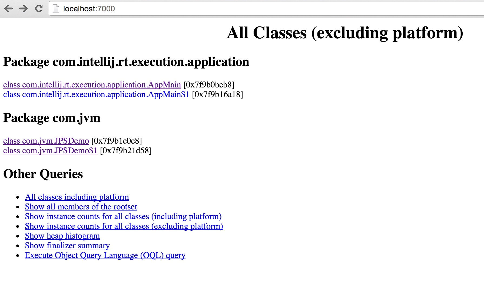

Table of Contents generated with DocToc
1、 2、 3、
jps命令可以列出正在运行的虚拟机进程，并显示虚拟机执行主类（Main Class, main()函数所在类）名称以及这些进程的本地虚拟机唯一ID（Local Virtual Machine Identifier, LVMID）。如果只启动了一台本地虚拟机，那么LVMID和系统PID是相同的。
jps命令格式：jps [options] [hostid]
当我没有运行任何java程序时运行jps -l，这时只有一条JVM记录：
nobody$ jps -l
2305 sun.tools.jps.Jps
当我执行下面的程序时，在这个程序里我让程序一直不结束。
public static void main(String args[]) {
new Thread(new Runnable(){
@Override
public void run() {
while (true) {
try {
System.out.println("Hello");
Thread.sleep(3000);
} catch (InterruptedException e) {
e.printStackTrace();
}
}
}
}).start();
}
这时再运行jps -l参数，会看到多了一个JVM进程：
nobody$ jps -l
2311 com.intellij.rt.execution.application.AppMain
2312 sun.tools.jps.Jps
除了使用-l参数输出主类的全名外，jps还有以下其他参数：
| 选项 | 作用 |
|---|---|
| -q | 只输出LVMID，省略主类的名称 |
| -m | 输出虚拟机进程启动时传递给主类main()函数的参数 |
| -l | 输出主类的全名，如果进程执行的是Jar包，输出Jar路径 |
| -v | 输出虚拟机进程启动时JVM参数 |
jps还可以通过RMI协议查询启动了RMI服务的远程虚拟机进程状态，hostid为RMI注册表中注册的主机名。
jstat是用于监视虚拟机各种运行状态信息的命令行工具。它可以显示本地或远程虚拟机进程中的类装载、内存、垃圾收集、JIT编译等运行参数。
jsat命令格式为：jstat [option vmid [interval[s|ms] [count]]]
对于命令格式中的VMID与LVMID需要特别说明一下：如果是本地虚拟机进程，VMID和LVMID是一致的，如果是远程虚拟机进程，那VMID的格式应当是：
[protocol:] [//] lvmid [@hostname[:port]/servername]
参数interval和count代表查询间隔和次数，如果省略这两个参数，说明只查询一次。假设需要每250毫秒查询一次进程2764垃圾收集状况，一共查询20次，那命令应当是：
jstat -gc 2764 250 20
选项option代表着用户希望查询的虚拟机信息，主要分为3类：类装载、垃圾收集、运行期编译状况，具体选项及作用请参考下表。
| 选项 | 作用 |
|---|---|
| -class | 监视类装载、卸载数量、总空间以及类装载所耗费的时间 |
| -gc | 监视Java堆状况，包括Eden区、两个Survivor区、老年代、永久代等的容量、已用空间、GC时间合计等信息 |
| -gccapacity | 监视内容与-gc基本相同，但输出主要关注Java堆各个区域使用到的最大、最小空间 |
| -gcutil | 监视内容与-gc基本相同，但输出主要关注已使用空间占总空间的百分比 |
| -gccause | 与-gcutil功能一样，但是会额外输出导致上一次GC产生的原因 |
| -gcnew | 监视新生代GC状况 |
| -gcnewcapacity | 监视内容与-gcnew基本相同，输出主要关注使用到的最大、最小空间 |
| -gcold | 监视老年代GC状况 |
| -gcoldcapacity | 监视内容与-gcold基本相同，输出主要关注使用到的最大、最小空间 |
| -gcpermcapacity | 输出永久代使用到的最大、最小空间 |
| -compiler | 输出JIT编译器编译过的方法、耗时信息 |
| -printcompilation | 输出已经被JIT编译的方法 |
下面我们用jstat命令来监视一个LVMID为2365的JVM进程
YuRongChandeMacBook-Pro:insightjvm_notebook yurongchan$ jstat -gcutil 2365
S0 S1 E O P YGC YGCT FGC FGCT GCT
0.00 0.00 12.05 0.00 14.17 0 0.000 0 0.000 0.000
其中每个选项的意义如下：
jinfo可以用于实时地查看和调整虚拟机各项参数。其实使用jps -v可以查看虚拟机启动时显式指定的参数列表，但如果想知道未被显式指定的参数的系统默认值，还可以使用jinfo的-flag选项。
jinfo命令格式：jinfo [option] pid
执行例子，查询 CMSInitiatingOccupancyFraction 参数值
nobody$ jinfo -flag CMSInitiatingOccupancyFraction 2618
-XX:CMSInitiatingOccupancyFraction=-1
jmap 命令用于生成堆转储快照。
jmap命令格式：jmap [option] vmid
执行样例，使用 jmap 生成一个正在运行的 Eclipse 的 dump 快照文件的例子。例子中的2618是通过jps名称查询到的LVMID。
$ jmap -dump:format=b,file=Desktop/dump.bin 2618
Dumping heap to /Users/yurongchan/Desktop/dump.bin ...
Heap dump file created
jmap工具主要选项
| 选项 | 作用 | 适用系统 |
|---|---|---|
| -dump | 生成Java堆转储快照。格式为：-dump[live, ]format=b, file= |
所有系统 |
| -histo | 显示堆中对象统计信息，包括类、实例数量、合计容量 | 所有系统 |
| -finalizerinfo | 显示在F-Queue中等待Finalizer线程执行finalize方法的对象。 | Linux/Solaris |
| -heap | 显示Java堆详细信息，如使用哪种回收器、参数配置、分代状况等 | Linux/Solaris |
| -permstat | 以ClassLoader为统计口径显示永久代内存装 | Linux/Solaris |
| -F | 当虚拟机进程对-dump选项没有响应时，可使用这个选项强制生成dump快照 | Linux/Solaris |
NOTE：
kill -3命令发送进程退出信号也可以生成dump文件Sun JDK 提供了 jhat 命令与 jmap 搭配使用，来分析 jmap 生成的堆转储快照。jhat 内置了一个微型的 HTTP/HTML 服务器，生成 dump 文件的分析结果后，可以在浏览器中查看。下面我们用 jhat 来分析上面生成的 dump.bin 文件：
$ jhat dump.bin
Reading from dump.bin...
Dump file created Sun May 15 23:04:19 CST 2016
Snapshot read, resolving...
Resolving 13822 objects...
Chasing references, expect 2 dots..
Eliminating duplicate references..
Snapshot resolved.
Started HTTP server on port 7000
Server is ready.
屏幕系那是“Server is ready”后，在浏览器输入 http://localhost:7000 就可以看到分析结果，如下图所示：

不过一般情况下不用 jhat 命令来分析 dump 文件，主要有以下两个原因：一是一般不会再部署应用的服务器上分析 dump 文件，因为分析工作是一个耗时而且消耗硬件资源的过程。另一个原因是 jhat 的分析功能还比较简陋，比起后面介绍的 VisualVM 等工具还差得很多。
NOTE：按下Ctrl+Z可以停止。
jstack 命令用于生成虚拟机当前时刻的线程快照（一般称为 threaddump 或者 Javacore 文件）。线程快照就是当前虚拟机内每一条线程正在执行的方法堆栈的集合，生成线程快照的主要目的是定位线程出现长时间停顿的原因，如线程间死锁、死循环、请求外部资源导致的长时间等待等都是导致线程长时间停顿的常见原因。
jstack命令格式：jstack [option] vmid
下面使用jstack查看一个线程对战的例子，
nobody $ jstack -l 2618
2016-05-15 23:39:04
Full thread dump Java HotSpot(TM) 64-Bit Server VM (24.79-b02 mixed mode):
"Attach Listener" daemon prio=5 tid=0x00007f83228e6000 nid=0x280b waiting on condition [0x0000000000000000]
java.lang.Thread.State: RUNNABLE
Locked ownable synchronizers:
- None
"DestroyJavaVM" prio=5 tid=0x00007f832387e800 nid=0x1303 waiting on condition [0x0000000000000000]
java.lang.Thread.State: RUNNABLE
Locked ownable synchronizers:
- None
jstack 工具主要选项如下：
| 选项 | 作用 |
|---|---|
| -F | 当正常输出的请求不被响应时，强制输出线程对战 |
| -l | 除堆栈外，显示关于锁的附加信息 |
| -m | 如果调用到本地方法的话，可以显示C/C++的堆栈 |
HSDIS 是一个 Sun 官方推荐的 HotSpot 虚拟机 JIT 编译代码的反汇编插件，它的作用是让 HotSpot 的 -XX:+PrintAssembly 指令调用它来把动态生成的本地代码还原为汇编输出。
HSDIS 包含在 HotSpot 虚拟机的源码之中，但没有提供编译后的程序。读者可以根据自己的操作系统和 CPU 类型在 Project Kenai 的网站下载到编译好的插件，直接放到 JDK_HOME/jre/bin/client 和 JDK_HOME/jre/bin/server 目录中即可。如果没有找到，则需要自己用源码编译一下。
但是如果你使用的是 Debug 或者 FastBug 版的 HotSpot，那可以直接通过 -XX:PrintAssembly 指令使用插件。如果使用的是 Product 版的 HotSpot，那还需要额外加入一个 -XX:UnlockDiagnosticVMOptions 参数。
NOTE：补充一个实例